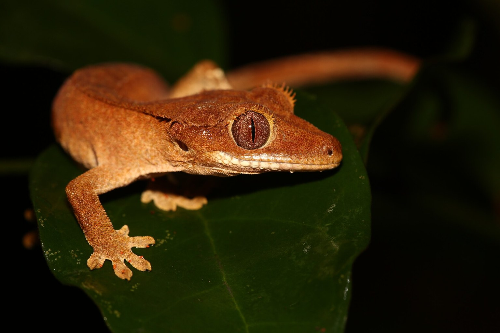

The Best Bioactive Substrate Mix for a Crested Gecko Tank
Coir alone is not bioactive — it is a wet sponge. The mix that actually supports plants, springtails and a gecko that sheds cleanly, plus the drainage layer everyone skips.

A crested gecko (Correlophus ciliatus) terrarium should sit at 72-80 °F (22-27 °C) in the warm zone and drop to 68-72 °F (20-22 °C) at night, with relative humidity swinging between 50 % and 80 % across a 24-hour cycle rather than pinned at one number. Those are the readings a hygrometer should show, and they matter because the substrate is what holds them. A layer that stays soggy below 1 inch deep is not humid — it is anaerobic, and the bacteria that move in there produce the ammonia and hydrogen sulphide that eventually reach the gecko's skin and lungs. The mix you choose determines whether the moisture you add stays available or turns into a swamp.
The evening the drainage failed
I built my first bioactive crested gecko tank in 2019: a 45 × 45 × 60 cm enclosure, a coir-and-bark mix, springtails, and a drainage layer I eyeballed at "about two inches". It rained hard that week and I misted as usual, twice a day. Three weeks in I lifted a cork hide and the smell hit me — a sour, iron note, like old pennies. The bottom inch of my "drainage" was compacted coir, not LECA, because I had run out and topped up the gap. Six springtail cultures died in that tank before I admitted it. I stripped it, lost a £40 culture and an evening, and rebuilt with 2 inches of clay pebbles, a mesh barrier, then the mix. I now squeeze a handful of substrate every Sunday. If more than a few drops fall, the water table is too high.
What a bioactive mix actually has to do
Three jobs, and they pull against each other: hold moisture without staying waterlogged, support a clean-up crew, and stay light enough that a gecko landing on it does not compact it into a brick. The recipe I run is roughly 50 % coco coir, 30 % orchid or fir bark, and 20 % coarse sand by volume, laid 3-4 inches deep over a 2-inch drainage layer of expanded clay. Coir holds water, bark keeps air pockets open, and sand gives the springtails grit to move through. Pure coir fails the aeration test; pure bark dries too fast at 50 % humidity.
Drainage is not optional. A false bottom of clay pebbles under a fine mesh barrier lets excess water sit away from the soil, so the substrate wicks moisture back up rather than drowning. A tank with no drainage and daily misting will sour within a month.
The cheapest fix here is a second hygrometer placed at substrate level, not stuck to the back wall where it reads dry air:
Running the system: moisture, crew, and cleanliness
I mist once in the evening and once lightly in the morning, aiming for a humidity peak of 70-80 % overnight that falls to 50-60 % by mid-afternoon. That drying gap is the part most keepers skip — it is what lets the springtails work and stops mould colonising bark. Use a digital hygrometer, check it against a second one, and trust the substrate-level reading over the wall-mounted one.
The clean-up crew is a load-bearing part of this setup, not garnish. Temperate springtails (the small white ones, not the giant tropical species) eat mould, fungus gnat larvae and decaying plant matter. Seed a new tank with a live culture a week after planting, keep the substrate damp for the first fortnight while they establish, and add isopods only if you want larger detritivores — they need more depth and more leaf litter than springtails alone.
A starter culture and a proper drainage base do more for a new tank than any misting schedule:
Clean-up crew does not excuse cleaning. Spot-remove visible waste and dead leaves weekly. Every four to six months, check the water table by pressing a finger into a corner — if water rises to the surface, you have overwatered and should hold misting for three days. Replace the top inch of substrate annually; a full rebuild every 18-24 months is realistic.
Life stages, and what changes
Juveniles under 12 cm total length need shallower substrate — 1.5-2 inches — because they spend time near the floor and a deep loose layer makes hunting crickets hard. Adults over 20 cm do fine at 3-4 inches. This is also where the tank volume decision bites.
| Stage | Substrate depth | Drainage layer | Humidity band | What to watch |
|---|---|---|---|---|
| Juvenile (<12 cm) | 1.5-2 in (4-5 cm) | 1 in (2.5 cm) | 60-80 % | Feeding access; compaction from tiny feet |
| Subadult (12-20 cm) | 2-3 in (5-7.5 cm) | 1.5-2 in (4-5 cm) | 55-80 % | Clean-up crew establishing |
| Adult (>20 cm) | 3-4 in (7.5-10 cm) | 2 in (5 cm) | 50-80 % | Water table, annual top-up |
The night temperature drop is not cosmetic. Crested geckos are crepuscular and digest poorly above 82 °F (28 °C); a sustained warm tank with a damp substrate is the classic combination that produces bacterial skin infections. Keep the warm end at 72-80 °F and let it fall overnight.
Frequently asked questions
Can I use a shop-bought bioactive mix straight out of the bag?
Yes, but check the ingredient list. A good mix is coir, bark and sand with no fertiliser or vermiculite. Bagged mixes vary in how much they hold water; squeeze a handful before adding it — a few drops is right, a stream means it will compact.
Do I need a drainage layer if I only mist lightly?
I would still use one, even at two inches of clay pebbles. Light misting still adds water faster than evaporation removes it in a closed tank, and the layer buys you weeks of margin. Without it, the water table rises silently and you find out by smell.
How often should I replace the clean-up crew?
Only when the population visibly crashes — you stop seeing springtails on a damp leaf. A healthy colony self-sustains for years if you keep feeding it leaf litter and don't let the substrate dry out completely. Restock with a fresh live culture rather than topping up with a different species.
What we actually use
Three pieces of equipment that do most of the work in a Crested Gecko setup. Nothing here is here because a brand asked.
-
Check price on AmazonHabitat & Decor
Reptile Bioactive Substrate Mix
Pre-mixed, composted and ready to use. Saves you sourcing topsoil you can actually trust.
Typical price $18–28 -
Check price on AmazonHabitat & Decor
LECA Clay Pebbles for Drainage
The layer that stops a bioactive floor turning into a swamp.
Typical price $12–20 -
Check price on AmazonHabitat & Decor
Temperate Springtail Culture
Mould control you cannot see working until it stops.
Typical price $12–20
Links open Amazon in a new tab. We do not set or track prices.
Affiliate disclosure. As an Amazon Associate, we earn from qualifying purchases. Every card in this guide is an affiliate link — it costs you nothing, and we only list gear we have run in our own enclosures.